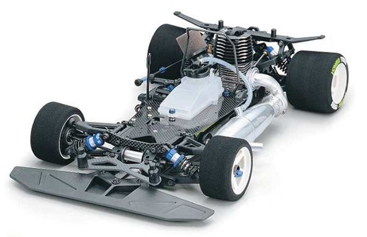

京商 エボルバ2004（F2004）

引用元：RC Scrapyard (https://www.rcscrapyard.net/)
📋 基本情報
| メーカー | 京商（Kyosho） |
|---|---|
| 機種名 | エボルバ2004 / F2004（Evolva 2004 / F2004） |
| シャーシ略称 | エボルバF2004 |
| 型番 | KYOC0703 |
| 発売時期 | 2004年 |
| 生産状況 | 生産終了 |
| カテゴリー | ラジコンカー（1/8スケール エンジンツーリングカー） |
| サブカテゴリー | ニトロオンロードレーシングカー（4WD） |
| 特記事項 | 2003年IFMAR 1/8スケールニトロオンロード世界選手権優勝記念モデル （ランベルト・コラーリ選手使用マシンベース） |
📏 シャーシスペック
| 駆動方式 | 4WD（四輪駆動） |
|---|---|
| 駆動系 | ベルトドライブ方式 |
| シャーシ構造 | ダブルデッキシャーシ ・下部：アルミ製 ・上部：カーボン製 |
| トランスミッション | 2速ギアボックス |
| リヤアクスル | ソリッドリヤアクスル（固定軸） |
| ドライブシャフト | ドッグボーンドライブシャフト |
| ベアリング | フルボールベアリング仕様 |
🔧 サスペンション
| 形式 | 4輪ダブルウィッシュボーン独立懸架 |
|---|---|
| ダンパー | コイルスプリング式オイルダンパー×4本 |
| アンチロールバー | フロント・リヤ標準装備 |
💡 特徴
世界チャンピオンマシンベース
- 2003年IFMAR世界選手権優勝を記念したモデル
- ランベルト・コラーリ選手使用マシンをベースに市販化
- レーシングスペック満載のハイエンドシャーシ
高剛性ハイブリッドシャーシ
- 下部デッキ：アルミ製（高剛性・放熱性）
- 上部デッキ：カーボン製（軽量・高剛性）
- ソリッドリヤアクスル採用でトラクション向上
- アンチロールバー標準装備
レーシング指向の設計
- ベルトドライブによる効率的な動力伝達
- 2速トランスミッションで幅広い速度域に対応
- オイルダンパーによる安定した走行性能
🔧 ぽすとそに工房での修理実績
修理難易度
★★★★★（非常に困難）
昔のシャーシであり、パーツ供給もないため修理は非常に困難です。
よくある故障・注意点
- ベルト駆動系の摩耗・劣化・張り調整
- オイルダンパーのオイル漏れ・Oリング劣化
- ギヤボックスのギヤ摩耗（特にスパーギヤ）
- ニトロエンジンの固定ボルト緩み
- ボールジョイントの緩み・脱落
- カーボンデッキの損傷
修理のポイント
- 補修パーツの入手が非常に困難
- ベルトは中央で5mm程度しか押し込めない程度に調整
- ドライブプーリーの歯の摩耗をこまめにチェック
- オイルダンパーのOリングは汎用品で代替可能な場合あり
- エンジンマウントボルトはロックナット使用推奨
- ボールコネクターは定期的な交換が必須
- ステアリングサーボセーバーの装備確認
その他の特徴
- ハイレベルレース仕様のため高度なセッティング知識が必要
- アンチロールバーによるロール制御が可能
- シャフト摩耗が進行しやすいためチタン製への交換推奨
- コレクション・レストア目的での保存が推奨